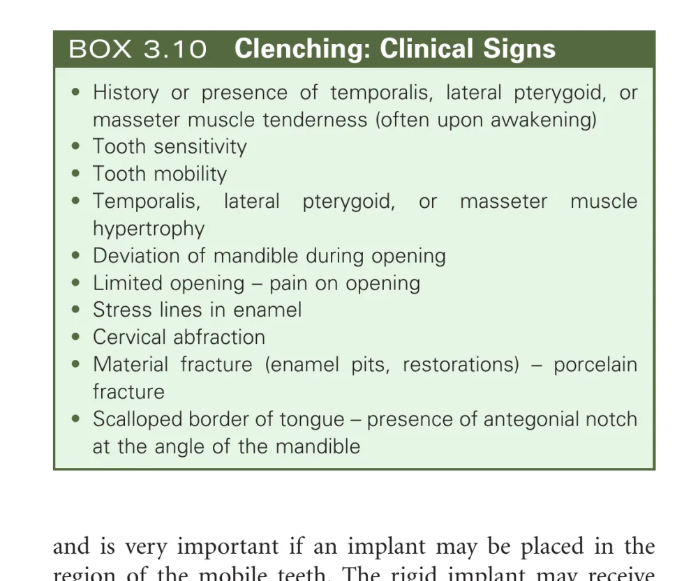
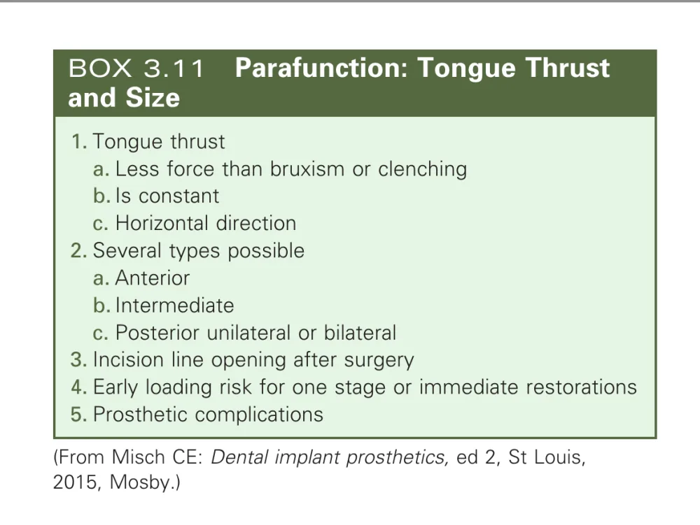

نسخه استخراجشده؛ ترجمه یا تأیید علمی انجام نشده است. وضعیت: captured
در درس پیش دیدی که مؤثرترین روش تشخیص براکسیسم، ارزیابی سایش است. ولی کلنچینگ معمولاً سایش آشکاری نمیسازد — چون حرکتی در کار نیست و نیرو بیشتر عمود بر صفحهی اکلوزال است.
پس «عادات کلنچینگ تشخیصشان دشوارتر است، چون سایش اکلوزال اغلب وجود ندارد» — یعنی باید به مجموعهی نشانههای دیگری تکیه کنی.
نشانههای بالینی کلنچینگ (کادر ۳٫۱۰):
• سابقه یا وجود حساسیت عضلات تمپورالیس، پتریگویید جانبی یا ماستر — اغلب هنگام بیدار شدن
• حساسیت دندانی، تحرک دندان
• هایپرتروفی عضلات تمپورالیس، پتریگویید جانبی یا ماستر
• انحراف مندیبل حین باز کردن، محدودیت باز شدن و درد هنگام باز کردن
• خطوط استرس در مینا
• ابفراکشن سرویکالی
• شکست ماده (حفرههای ریز مینا، ترمیمها) — شکست پرسلن
• حاشیهی کنگرهدار زبان
• وجود ناچ آنتهگونیال در زاویهی مندیبل
دو نشانهی آخر را دستکم نگیر — «حاشیهی کنگرهدار زبان» و «ناچ آنتهگونیال». هیچکدام به دندان مربوط نیستند، ولی هر دو ردّ ماندگار فشار مزمن هستند: زبان به دندانها فشرده شده، و عضلهی ماستر آنقدر کشیده که استخوان زاویهی فک را بازسازی کرده.
و «خطوط استرس در مینا» و «شکست ماده» هم نشانههای ظریفیاند: ردّ خستگی مینا، پرسلن و قطعات ایمپلنت زیر بار مکرر.
و اکنون فرمیتوس — یک آزمون ساده که در چند ثانیه انجام میشود:
تعریفش: «فرمیتوس، نوعی تحرک ارتعاشی دندان، اغلب در بیمار کلنچر وجود دارد.»
و روش انجامش، دقیقاً:
«برای ارزیابی این وضعیت، انگشت دندانپزشک بهآرامی سطح فاسیال یک دندان را در هر بار لمس میکند و در حالی که بیمار دندانها را روی هم میزند، ارتعاش را حس میکند.»
و تفسیرش: «فرمیتوس نشانهی یک اضافهبار اکلوزال موضعی است.»
و چرا این برای ایمپلنت اهمیت دارد؟ پاسخ این است:
«این بسیار مهم است اگر قرار باشد ایمپلنتی در ناحیهی دندانهای متحرک قرار گیرد. ایمپلنت رژید ممکن است بیش از سهم خود از نیروی اکلوزال را دریافت کند وقتی با دندانهای متحرک احاطه شده است.»
این همان اصل اختلاف حرکت از یونیت ۱٫۴ است — ولی اینجا در سطح قوس، نه در سطح یک پروتز واحد. حتی بدون اتصال فیزیکی، اگر همسایهها متحرک باشند، ایمپلنت سهم نامتناسبی میگیرد.
و ابفراکشن سرویکالی — با یک عدد شیوع:
«ظاهر ناچدار بخش سرویکالی دندان مستقیماً با تمرکز نیروهایی که در مطالعات آنالیز اجزای محدود سهبعدی و فوتوالاستیسیته نشان داده شده همبستگی دارد.»
یعنی ابفراکشن یک یافتهی مکانیکی است، نه یک ضایعهی پوسیدگی — و محلش دقیقاً همانجایی است که مدلسازی، تمرکز استرس را پیشبینی میکند.
و شیوعش: «مطالعهای روی جمعیت مسن غیرآسایشگاهی نشان داد که سایش سرویکالی در ۵۶ درصد شرکتکنندگان وجود داشت.»
پنجاهوشش درصد — یعنی بیش از نیمی از بیماران مسن. پس این یافته را باید انتظار داشته باشی، نه اینکه از دیدنش شگفتزده شوی.
و اکنون قاعدهی تشخیصی که این درس را جمع میکند — کوتاه و قابل استفاده:
«در نبود سایش دندان، کلنچینگ مظنون اصلی است.»
و شکل کاملترش: «وقتی نشانههای بالینی نیروی بیشازحد روی دندانها، عضلات یا مفصل ظاهر شوند در حالی که سایش انسیزال وجود ندارد، کلنچینگ بهشدت مظنون است.»
این یک قاعدهی حذفی است: نشانههای نیروی زیاد هست، ولی سایش نیست ← کلنچینگ.
و این دو میتوانند همزمان رخ دهند: «بنابراین ترکیبی از براکسینگ و کلنچینگ ممکن است وجود داشته باشد.»
و چرا کلنچینگ سایش نمیسازد؟ «نیروهای تولیدشده حین کلنچینگ معمولاً بیشتر عمود بر صفحهی اکلوزال جهت داده میشوند، دستکم در نواحی خلفی دهان. سایش دندانها معمولاً آشکار نیست، و کلنچینگ اغلب حین معاینهی داخلدهانی تشخیص داده نمیشود.»
و هشدارش: «در نتیجه، درمانگر باید در تشخیص این اختلال دقت بیشتری به خرج دهد.»
و دربارهی شدت نیرو، هیچ تخفیفی وجود ندارد: «نیروهای درگیر بهطور چشمگیری بیش از بارهای فیزیولوژیک طبیعیاند و از نظر مقدار و مدت شبیه براکسیسماند.»
پس کلنچینگ «نسخهی ملایمتر» براکسیسم نیست؛ فقط رد کمتری میگذارد.
و سازوکار زبان کنگرهدار — که هوشمندانهتر از آن است که به نظر میرسد:
«زبان اغلب حین کلنچینگ به سطوح لینگوال دندانهای ماگزیلا یا مندیبل تکیه داده میشود و فشارهای جانبی وارد میکند که به حاشیهی کنگرهدار میانجامد.»
و بخش کلیدی: «این موقعیت تراست زبان ممکن است با یک خلأ داخلدهانی همراه باشد، که به کلنچ اجازه میدهد برای مدتی طولانی ادامه یابد — اغلب حین خواب.»
یعنی زبان فقط یک قربانی نیست؛ یک تسهیلکننده است. خلأیی که میسازد، کلنچ را از یک انقباض کوتاه به یک فشار ساعتها ادامهدار تبدیل میکند.
و روش دیدنش، که ظریف است: «وقتی درمانگر از بیمار میخواهد دهانش را کاملاً باز کند تا حداکثر باز شدن اکلوزال را ارزیابی کند (در حالی که مفصل گیجگاهیـفکی را لمس میکند)، کانتور جانبی زبان مشاهده میشود تا هرگونه حاشیهی کنگرهدار دیده شود.»
یک حرکت، سه یافته: باز شدن دهان، لمس مفصل، و مشاهدهی زبان — همه همزمان.
و در پایان، اعداد باز شدن دهان که معیار عینی به تو میدهند:
«باز شدن طبیعی باید دستکم ۴۰ میلیمتر از لبهی انسیزال ماگزیلا تا لبهی انسیزال مندیبل در بیمار انگل کلاس I باشد، با در نظر گرفتن اورجت یا اورلپ.»
و نکتهی محاسباتی: «اگر اورجت یا اورلپ افقی وجود داشته باشد، مقدارش بر حسب میلیمتر از اندازهگیری حداقل ۴۰ میلیمتری کم میشود.»
و بازهی طبیعی بدون در نظر گرفتن اورلپ: «۳۸ تا ۶۵ میلیمتر برای مردان و ۳۶ تا ۶۰ میلیمتر برای زنان، از لبه تا لبه.»
و یک نشانهی جانبیسازی: «انحراف به یک سو حین باز کردن، نشاندهندهی عدم تعادل عضلانی در همان سمت است.»
«همان سمت» را نگه دار — این به تو میگوید کدام طرف را با دقت بیشتری لمس کنی.

تراست زبان سومین پارافانکشن است، و پروفایل کاملاً متفاوتی دارد (کادر ۳٫۱۱):
• نیروی کمتر از براکسیسم یا کلنچینگ
• ولی مداوم است
• و جهتش افقی است
این سه ویژگی را کنار هم بگذار. نیروی کم اما همیشگی و افقی — و از ماژول ۱ میدانی که نیروی افقی همان چیزی است که ایمپلنت کمترین تحمل را در برابرش دارد. پس «کم» بودن نیرو، آرامشبخش نیست.
انواعش: «قدامی، میانی، خلفی — و یکطرفه یا دوطرفه، که ممکن است تقریباً در هر ترکیبی یافت شوند.»
و اکنون دو آزمون تشخیصی که هر دو سادهاند و در چند ثانیه انجام میشوند:
آزمون تراست زبان قدامی:
«پزشک لب پایین را پایین نگه میدارد، با سرنگ آب داخل دهان آب میپاشد، و از بیمار میخواهد ببلعد.»
و منطقش زیباست: «یک بیمار طبیعی با قرار دادن زبان روی بخش قدامی کام، خلأ لازم را در دهان میسازد و بدون دشواری میبلعد. بیمار با تراست زبان قدامی نمیتواند خلأ لازم برای بلع را ایجاد کند وقتی لب پایین کنار زده شده، چون مهر و خلأ برای این بیمار میان زبان و لب پایین برقرار میشود. در نتیجه، بیمار نمیتواند در حالی که لب پایین عقب کشیده شده ببلعد.»
یعنی آزمون، مهر طبیعی بیمار را از کار میاندازد و میبیند آیا جایگزینی دارد یا نه.
آزمون تراست زبان خلفی:
«با کنار زدن یک گونه در هر بار از دندانهای خلفی یا ناحیهی بیدندان با آینهی دهانی، تزریق آب با سرنگ، و درخواست بلع ارزیابی میشود. شواهد بصری زبان حین بلع ممکن است با فشار روی آینه همراه باشد و یک نیروی جانبی را تأیید کند.»
فشار روی آینه — این تأیید لمسی مستقیم نیروی جانبی است.
و اکنون چهار عارضه که تراست زبان میسازد:
یکم — بارگذاری زودهنگام: «اگرچه نیروی تراست زبان شدت کمتری از سایر نیروهای پارافانکشنال دارد، افقی است و میتواند استرس را در محل پرموکوزال ایمپلنت افزایش دهد. این برای رویکردهای جراحی یکمرحلهای و ترمیم فوری ایمپلنتها بحرانیترین است، جایی که ایمپلنتها در موقعیت مرتفع در جایگذاری اولیهاند و رابط ایمپلنت در فاز ترمیم زودهنگام است.»
و یک هشدار علّی مهم: «اگر دندانهای طبیعی ناحیهی تراست زبان در نتیجهی موقعیت یا حرکت نابجای زبان از دست رفته باشند، ایمپلنتها در ترمیم اولیه و بارگذاری پروتزی زودهنگام در خطر افزایشیافتهاند.»
یعنی اگر همان نیرو دندان طبیعی را از پا درآورده، دلیلی ندارد فکر کنی ایمپلنت مقاومتر خواهد بود.
دوم — باز شدن خط برش: «تراست زبان ممکن است به باز شدن خط برش پس از گرافت استخوان یا جراحی ایمپلنت هم کمک کند، که میتواند هم بافت سخت و هم نرم را به خطر بیندازد. این بهویژه در یک روش افزایش استخوان قابلتوجه است.»
سوم — حرکت دندان: عادت تراست زبان ممکن است به حرکت یا تحرک دندان بینجامد، که وقتی ایمپلنت در همان کوادرانت هست اهمیت دارد.
چهارم — فضای ناکافی زبان. و اینجا یک خطای پروتزی رایج در کمین است:
«یک اشتباه پروتزی این است که عرض کانتور لینگوال دندانهای مندیبل را کم کنیم تا به زبان فضای بیشتری بدهیم.»
و چرا اشتباه است: «کاسپ لینگوال دندانهای خلفی ترمیمشدهی مندیبل باید از منحنی ویلسون پیروی کند و اورجت افقی مناسب داشته باشد تا زبان را حین عملکرد محافظت کند. کاهش عرض دندانهای خلفی مندیبل اغلب بروز گاز گرفتن زبان را افزایش میدهد و ممکن است با گذر زمان برطرف نشود.»
و هزینهاش سنگین است: «وقتی سطح لینگوال ترمیم مندیبل کاهش داده شود، ممکن است کل پروتز نیاز به بازسازی داشته باشد.»
پس کاری که برای راحتی زبان میکنی، دقیقاً باعث گاز گرفتن زبان میشود — چون کانتور لینگوال، سپر زبان است نه مزاحم آن.
و یک توصیهی ارتباطی: «دندانپزشک ترمیمکننده باید موقعیت زبان را پیش از درمان شناسایی کند و بیمار را دربارهی منحنی یادگیری اولیهی زبان پس از تحویل دندانها روی ایمپلنتها آگاه کند.»
و پیش از جمعبندی، یک عارضه که هیچ ربطی به پروتز نهایی ندارد و در دورهی ترمیم رخ میدهد:
«یک علت شایع شکست ایمپلنت در طول ترمیم، پارافانکشن در بیماری است که پروتز بافتنرمپشتیبان روی یک ایمپلنت مدفون میپوشد.»
و زنجیرهی رویداد: «بافت پوشانندهی ایمپلنت حین اپیزود پارافانکشن فشرده میشود. بارگذاری زودرس ممکن است میکروموومنت بدنهی ایمپلنت در استخوان ایجاد کند و استئواینتگریشن را به خطر بیندازد.»
و شکل شدیدترش: «وقتی یک ترمیم بافتنرمبر پوشاننده در نتیجهی پارافانکشن فشار وارد کند، نکروز فشاری باعث دهیسنس بافت نرم روی ایمپلنت میشود.»
و اکنون توصیهای که خلاف شهود است و باید حفظش کنی:
«این وضعیت با پوشاندن جراحی ایمپلنت با بافت نرم اصلاح نمیشود.»
یعنی راهحل جراحی، راهحل نیست. چون علت، پروتز است نه بافت.
و راهحل درست: «ناحیهی پشتیبانی بافت نرم پروتز روی ایمپلنت باید در دورهی ترمیم بهطور سخاوتمندانه ریلیف شود، هرجا پارافانکشن مشاهده شود.»
و یک قید عملی: «با پارسیلهای بدون فلز، این کار ممکن است پروتز را ضعیف کند و به شکست احتمالی بینجامد.»
پس در بیمار پارافانکشنال، پیش از هر جراحی ایمپلنتی، طرح پروتز موقت را بازبینی کن.
و در پایان، یک قاعدهی انتخاب پروتز:
بیمار بدون دنچر مندیبل اغلب زبان بزرگتر از حد طبیعی دارد؛ و نتیجهی عملی: «مشاهده شده که یک ترمیم ثابت برای این نوع بیمار سودمندتر است. اگر بیمار پروتز RP-5 دارد، باید به RP-4 تبدیل شود. یک ترمیم RP-5 در بیماران با تراست یا اندازهی زبان بسیار کمثباتتر است.»
